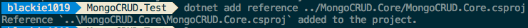
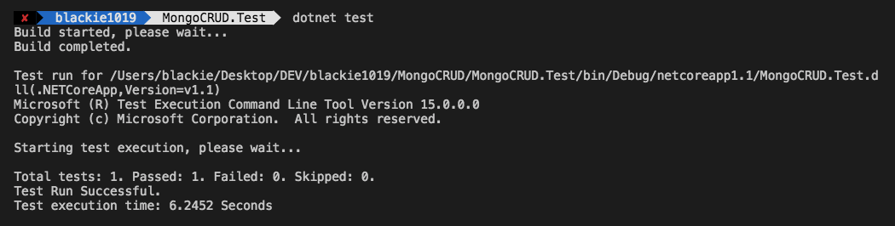
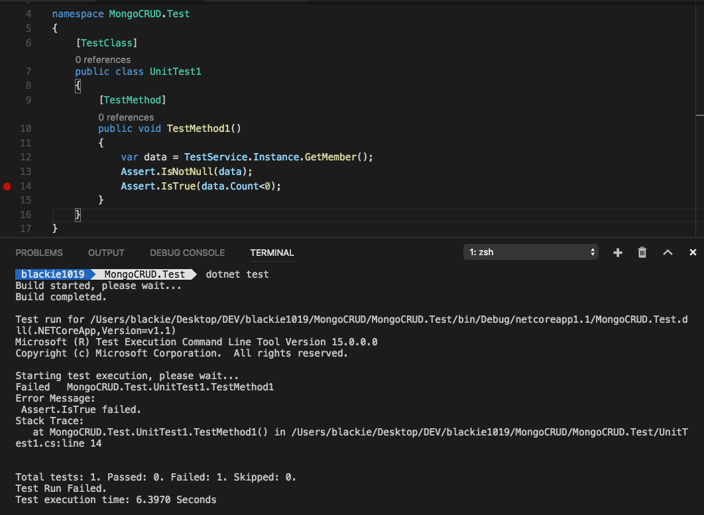

紀錄一下如何在ASP.NET Core上透過ＭS Test撰寫Unit Testing
在ASP.NET Core開發環境上預設支援兩種測試框架MSTest與Nunit Test，首先來看看如何使用MSTest如何撰寫測試
MSTest
MSTest 是微軟提出的測試框架也是ASP.NET與ASP.NET Core內建的測試框架(Test Framework)，在親生老爸的支援下跟IDE的整合度高，且在大多使用情境皆可應付．如果偏好使用Total Solution或是剛入門測試框架的新手，可以使用此框架嘗試看看如何撰寫測試案例來協助開發品質．
First Unit Test on ASP.NET Core and MSTest
而這邊就實作如何在ASP.NET Core 上添加 MSTest專案並執行測試
Create Source Project
這邊我們開好三個資料夾，分別如下：
MongoCRUD.Core
取用與操作MongoDB內資料的函式庫
MongoCRUD.Test
測試MongoCRUD.Core功能的測試專案
MongoCRUD.API
API服務應用程式，將寫好的MongoCRUD.Core載入並根據參數提供資料
所以我們先建立Library類型專案給MongoCRUD.Core
cd MongoCRUD.Core
dotnet new classlib
接者我們建立MSTest類型專案給MongoCRUD.Test
cd MongoCRUD.Test
dotnet new mstest
接者我們建立Web API類型專案給MongoCRUD.API
cd MongoCRUD.API
dotnet new webapi

Add Library Reference for Test Project and API Project
接著我們要幫測試專案與API專案加入函式庫的參考以便呼叫寫好的功能，這邊以測試專案加入參考為例：
cd MongoCRUD.Test
dotnet add reference ../MongoCRUD.Core/MongoCRUD.Core.csporj

這邊是使用專案參考(好處是建置時會一起連同相依的函式專案一起重新建置)，所以只要將專案檔(.csporj)位置加入至欲參考的專案內即可
Complete Source Function
而這邊我們簡單的撰寫一個MongoDB取用資料的功能，開發前記得先將專案與參考該函式庫的專案加入MongoDB.Driver的參考
<Project Sdk="Microsoft.NET.Sdk">
<PropertyGroup>
<TargetFramework>netcoreapp1.1</TargetFramework>
</PropertyGroup>
<ItemGroup>
<PackageReference Include="MongoDB.Driver" version="2.4.3" />
</ItemGroup>
</Project>
並執行dotnet restore將必要函式庫載入
dotnet restore
Member.cs
using MongoDB.Bson;
using MongoDB.Bson.Serialization.Attributes;
namespace MongoCRUD.Core.Pocos
{
public class Member
{
public ObjectId Id { get; set; }
[BsonElement("name")]
public string Name { get; set; }
[BsonElement("balance")]
public decimal Balance { get; set; }
}
}
MemberService.cs
using System;
using System.Collections.Generic;
using MongoDB.Bson;
using MongoDB.Driver;
using MongoCRUD.Core.Pocos;
namespace MongoCRUD.Core
{
public sealed class MemberService
{
private static readonly Lazy<MemberService> lazy = new Lazy<MemberService>(() => new MemberService());
public static MemberService Instance { get { return lazy.Value; } }
private MongoCredential Credential {get;set;}
private MongoClientSettings ClientSettings{get;set;}
private MongoClient Client {get;set;}
private IMongoDatabase Database {get;set;}
private MemberService()
{
this.Credential = MongoCredential.CreateCredential(<instance name>, <user account>,<password>);
this.ClientSettings = new MongoClientSettings
{
Credentials = new[] { this.Credential },
Server = new MongoServerAddress(<domain>, <port>)
};
this.Client = new MongoClient(this.ClientSettings);
this.Database = this.Client.GetDatabase(<database name>);
}
public List<Member> GetMember()
{
var collection = this.Database.GetCollection<Member>(<collection name>);
return collection.Find(new BsonDocument()).ToList();
}
}
}
這邊服務的部分是用Singleton的方式重複使用同一個連線實體，實務上這一個實體應該從外面傳入給建構子(constructor)才可以增加重複使用性與增加效能．
Complete Test Case and Execute it
而當我們要執行剛剛所撰寫好的測試案例，則須先切換至對應的專案下執行下面指令
dotnet test

這邊可以看到跑出來的測試結果是否通過或是失敗，這邊我們刻意寫一個失敗的測試案例(將Assert.IsTrue(data.Count<0);):

結果顯示我們的測試有一個失敗的案例
MSTest and NUnit Test
先總結個人的喜好，MSTest雖然是比較陽春且微軟特有的測試框架，但絕對足夠做日常的測試開發．但如果要強調跨語言/環境的測試與負責的測試驗證，或許Nunit Test目前還是首選．
對於其他比較跟功能可以參考附錄其他網路大大幫忙整理的心得，以下節錄兩者使用的Attribue與Assert表幫助大家快速了解，參考來源：
Attributes
| MSTest (v1) | NUnit 3 | xUnit.net 2.x | Comments |
|---|---|---|---|
| [AssemblyCleanup] | n/a | n/a | 識別方法，該方法包含組件中的所有測試都執行完畢後，為釋放此組件所佔用資源而要使用的程式碼。 |
| [AssemblyInitialize] | n/a | n/a | 識別方法，該方法所包含的程式碼用於已執行組件中的所有測試之前，以便配置此組件所佔用的資源。 |
| [ClassCleanup] | [OneTimeTearDown] | IClassFixture | 指定測試執行後的結束方法，一個測試 class 只執行一次 |
| [ClassInitialize] | [OneTimeSetUp] | IClassFixture | 指定測試執行前的起始方法，一個測試 class 只執行一次 |
| [CssIteration] | Repeat | 表示這個測試所對應的專案反覆項目。 | |
| [CssProjectStructure] | n/a | n/a | 表示這個測試所對應到之 Team 專案階層架構中的節點。 |
| [DataSource] | [Theory] | [Theory] [xxxData]” | data-driven test |
| [DeploymentItem] | n/a | n/a | 指定應該在執行測試之前的組件一起部署的檔案或目錄。附加這個屬性對測試類別和測試方法。您可以使用多個執行個體。 |
| [Description] | [Description] | n/a | 用來指定測試的說明。 |
| [ExpectedException] | Throws.TypeOf | Assert.Throws Record.Exception” | 測試的對象出現 exception Nunit 3 與 xUnit.net 都是直接從 code 處理掉，是比較方便直覺的 |
| [ExpectedExceptionBase] | n/a | n/a | 這是屬性的基底類別，這些屬性指定單元測試應擲回預期的例外狀況。 |
| [HostType] | platform 有包含相關功該 | n/a | 指定將執行相關聯單元測試的主機的類型。 |
| [Ignore] | [Ignore] | [Fact(Skip=”reason”)] | 用來標示忽略該測試 |
| [Owner] | [Author] | n/a | 用來指定負責維護、執行和/或偵錯測試的人員。 |
| [Priority] | [Order] | n/a | 用來指定單元測試的優先權。 |
| [TestCategory] | [Category] | n/a | 用來指定單元測試分類別的類別。 |
| [TestCategoryBase] | n/a | n/a | 提供分類屬性的基底類別。 |
| [TestClass] | [TestFixture] | n/a | 將 class 標示測試 class. 特別的是 xUnit.net 不需要加上這樣的 attibute 會自動去搜尋所有 public class 中的測試方法，但這樣一來也代表著速度會受到影響; |
| [TestClassExtension] | n/a | n/a | 啟動類別，以便將其辨認為單元測試延伸模組類別。 |
| [TestCleanup] | [TearDown] | IDisposable.Dispose | 指定測試執行後的方法，常用來清除測試產生的資料，每個測試皆會執行一次 |
| [TestInitialize] | [SetUp] | Constructor | 指定測試執行前的起始方法，常用來設定測試用的初始值，每個測試皆會執行一次 |
| [TestMethod] | [Test] | [Fact] | 標記為測試方法 |
| [TestProperty] | [Property] | [Trait] | 用來指定共用的測試屬性 |
| [Timeout] | [Timeout] | n/a | 用來指定單元測試的逾時期間。 |
| [WorkItem] | n/a | n/a | 用來指定與測試相關聯的工作項目。 |
| n/a | [TestFixtureSource] | ICollectionFixture | 用來與其他測試共用物件 |
| n/a | [Apartment] | n/a | 可以使用在組件、class、method，用來指定測試執行的模式-STA(Single-threaded apartment)/MTA(Multi-threaded apartment) |
| n/a | [Combinatorial] | n/a | 給定參數集合，會自動產生所有參數組合的測試 |
| n/a | [Culture] | n/a | 說明測試應該使用的語系，不會直接修改語系 |
| n/a | [Datapoint] | n/a | 為 theory 方法提供測試資料 |
| n/a | [DatapointSource] | n/a | 為 theory 方法提供測試資料，資料為集合或是陣列(ienumerable) |
| n/a | [Explicit] | n/a | 如果沒有特別選定執行，預設為不執行 |
| n/a | [LevelOfParallelism] | n/a | 平行測試的 thread 數，組件層級的 attribute，預設值是 cpu 核心數或是2(看哪個比較大) |
| n/a | [Maxtime] | n/a | 指定測試最大可以執行時間(單位：毫秒)，超出時間即為失敗，仍會執行結束 |
| n/a | [Pairwise] | n/a | 會產生所有參數的兩兩對應測試組合;combinatorial 適用於兩組參數,PairwiseAttribute 則適用於兩組以上 |
| n/a | [Parallelizable] | n/a | 用來標示哪些測試要平行執行(會影響下層),可以指定影響範圍 (None-不使用平行執行;Self-自己與其他測試使用平行執行;Choldren-所屬下層測試使用平行測試;Fixture-使用平行測試);ParallelScope.Self 是預設值;並未實作於 method 這層(ParallelizableAttribute 套用在 method 上會被忽略);ParallelScope.Children 與 ParallelScope.Fixtures 功能相同 |
| n/a | [Platform] | n/a | 用來指定測試的平台，詳細清單可以參考 https://github.com/nunit/docs/wiki/Platform-Attribute |
| n/a | [Random] | n/a | 產生隨機參數來測試 |
| n/a | [Range] | n/a | 將範圍內所有可能參數代入測試 |
| n/a | [RequiresThread] | n/a | 以獨立的 thread 來執行測試 |
| n/a | [Retry] | n/a | 失敗重試 |
| n/a | [Sequential] | n/a | 將參數組合依序執行，而不是對所有組合執行 e.g. [a,b,c]*[1,2,3] –> a-1,b-2,c-3 |
| n/a | [SetCulture] | n/a | 指定語言 |
| n/a | [SetUICulture] | n/a | 指定 UI 顯示語言 |
| n/a | [SetUpFixture] | n/a | 讓 class 在同一個 namespace 中有一次性的統一起始(setup)或是結束(teardown)行為 |
| n/a | [SingleThreaded] | n/a | 用來將 class 中的測試方法在同個 thread 中執行，Nunit 3.6 才加入 |
| n/a | [TestCase] | n/a | 給定測試案例參數來進行測試 |
| n/a | [TestCaseSource] | n/a | 先定義測試案例參數，然後將參數指定給 method 來測試 |
| n/a | [TestOf] | n/a | 用來標示是哪個 class 的測試 |
| n/a | [Values] | n/a | 為測試方法指定參數-用在描述 method 的參數 |
| n/a | [ValueSource] | n/a | 先定義參數資料，再指定給 method 來進行測試，可以給自訂型別 - 用在描述 method 的參數 |
Assertions
| MSTest (v1) | NUnit 3 | xUnit.net 2.x |
|---|---|---|
| AreEqual | AreEqual | Equal |
| AreNotEqual | AreNotEqual | NotEqual |
| AreNotSame | AreNotSame | NotSame |
| AreSame | AreSame | Same |
| Equals | n/a | Equals |
| Fail | n/a | n/a |
| Inconclusive | Inconclusive | n/a |
| IsFalse | False | False |
| IsInstanceOfType | IsInstanceOf | IsType |
| IsNotInstanceOfType | IsNotInstanceOf | IsNotType |
| IsNotNull | NotNull | NotNull |
| IsNull | Null | Null |
| IsTrue | True | True |
| ReplaceNullChars | n/a | n/a |
| n/a | Catch | n/a |
| n/a | CatchAsync | n/a |
| n/a | Contains | Contains |
| n/a | DoesNotThrow | n/a |
| n/a | DoesNotThrowAsync | n/a |
| n/a | Fail | n/a |
| n/a | Greater | n/a |
| n/a | GreaterOrEqual | n/a |
| n/a | Ignore | n/a |
| n/a | IsAssignableFrom | n/a |
| n/a | IsEmpty | Empty |
| n/a | IsNaN | n/a |
| n/a | IsNotAssignableFrom | n/a |
| n/a | IsNotEmpty | NotEmpty |
| n/a | Less | n/a |
| n/a | LessOrEqual | n/a |
| n/a | Pass | n/a |
| n/a | Throws | Throws |
| n/a | ThrowsAsync | ThrowsAsync |
| n/a | n/a | All |
| n/a | n/a | Collection |
| n/a | n/a | DoesNotContain |
| n/a | n/a | DoesNotMatch |
| n/a | n/a | EndsWith |
| n/a | n/a | InRange |
| n/a | n/a | IsAssignableFrom |
| n/a | n/a | Matches |
| n/a | n/a | NotInRange |
| n/a | n/a | NotStrictEqual |
| n/a | n/a | ProperSubset |
| n/a | n/a | ProperSuperset |
| n/a | n/a | PropertyChanged |
| n/a | n/a | ReferenceEquals |
| n/a | n/a | Single |
| n/a | n/a | StartsWith |
| n/a | n/a | StrictEqual |
| n/a | n/a | Subset |
| n/a | n/a | Superset |
| n/a | n/a | ThrowsAny |
| n/a | n/a | ThrowsAnyAsync |